Tunisko – mezi Saharou, medinami a tyrkysovým mořem
Tunisko - Monastir
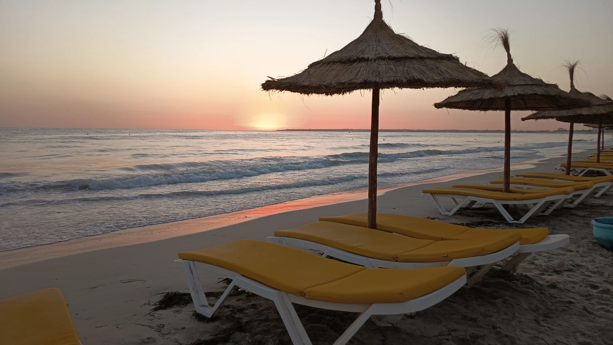
Když se letos začalo řešit, kam vyrazíme k moři, nebyla jsem z toho zrovna dvakrát odvařená – a z výsledku už vůbec ne. Volba padla na Tunisko, což by mi samo o sobě ani tolik nevadilo, protože jsem tam ještě nebyla. Horší bylo, že letos jedeme ve čtyřech a domluvit se ve čtyřech na jednom hotelu se ukázalo skoro jako nadlidský úkol. Navíc s námi jely dvě dospělé děti, takže každý měl trochu jinou představu o tom, jak by měla ideální dovolená vypadat. Po dlouhém, předlouhém vybírání nakonec zvítězil One Resort Aqua Park. Už samotné spojení „Aqua Park“ mi napovědělo, že tam bude hodně dětí a že to bude velký špatný. A moje předtucha mě bohužel nezklamala. 😅
Do Tuniska jsme přijely s tím, že si užijeme klasickou odpočinkovou dovolenou u moře. Po týdnu můžu říct, že sem už se určitě vracet nebudu. 😅
Po příletu nás přivítalo 32 °C, ale pocitově snad minimálně 45 °C. Vlhký a těžký vzduch, ve kterém člověk vyšel ven a měl pocit, že dostal facku rozpáleným mokrým ručníkem. 😅 Cestou do resortu jsme se mohly kochat okolím, které mi dost připomínalo Egypt – bohužel hlavně množstvím všudypřítomných odpadků. Samotný resort je opravdu obrovský a tomu odpovídá i množství lidí. Pokud vám nevadí volně pobíhající a ječící děti a občas nějaké to hovno v bazénu, budete nejspíš spokojení. Ano, čtete správně. 😅 Pokud hledáte klidnější dovolenou, doporučuji zvolit něco jiného. Naštěstí je tu bazén pouze pro dospělé, který pro nás byl prakticky záchranou.
Největším zklamáním bylo jednoznačně moře. Chaluhy bych ještě přežila, ale odpadky ve vodě a hnědá barva už byly horší. Některé dny byla vyvěšená červená vlajka, jindy zelená, ale ani tehdy moře příliš nelákalo. Jednou jsem se dokonce pokusila šnorchlovat – pár rybiček a mušlí jsem viděla, ale prakticky nebylo nic vidět. Jestli sem tedy jedete hlavně kvůli krásnému moři, budete pravděpodobně zklamaní. Dalším bonusem je zápach připomínající žumpu, který se areálem táhl prakticky každý den. Záchody u pláže jsou kapitola sama pro sebe – podlaha pravidelně plavala ve „vodě“ a na zdech a kolem záchoda byly exkrementy a bylo to silně nechutné.
Ani úklid pokojů není zrovna silnou stránkou hotelu. Sprchový gel ani šampon nám nikdo nedoplnil, o toaletní papír jsme si musely říct a úklid působil spíš stylem „něco uděláme a zbytek necháme být“. Jednou nám po úklidu úplně zmizely osušky. Na recepci jsme je urgovaly dvakrát a nakonec dorazily asi po třech hodinách. Jindy jsme zase našly hromadu špinavých ručníků naházených na balkoně a raději jsme ani nepátraly po tom, co s nimi předtím uklízeli. Podle rozhovorů s dalšími hosty jsme rozhodně nebyly jediní, kdo měl podobné zkušenosti. Na pokoji navíc jedna použitelná zásuvka a minilednička, kterou kvůli tomu nebylo pořádně kam zapojit. Někdo si stěžoval na šváby, my měly alespoň jen mravence. 😅
Ručníky k bazénu a na pláž se půjčují proti záloze 20 dinárů, což mě překvapilo. Stejně tak nečekejte automaticky lahve vody na pokoji – co si sami nezařídíte, to nemáte.
Naopak velkou pochvalu si zaslouží jídlo. Výběr byl opravdu obrovský – místní kuchyně, klasická evropská jídla, burgery, ovoce, několik druhů sladkého a během pobytu byla i tematická večeře s mořskými plody. Ta byla zvláštní, ale moc dobrá.
Samostatnou kapitolou jsou ovšem někteří hosté. Předbíhání, strkání a tlačení se je v restauraci naprosto běžné a nějaká osobní zóna nebo ohleduplnost se tu moc nenosí. Člověk stojí ve frontě a najednou zjistí, že už vlastně ve frontě není, protože se před něj mezitím nacpala půlka restaurace. Ještě horší je ale ten neuvěřitelný bordel, který po některých zůstává. Stoly plné nádobí, ubrousků a hlavně talíře vrchovatě naložené jídlem, ze kterého dvakrát uzobnou a zbytek nechají vyhodit. A nejde o pár soust – kolikrát zůstávají prakticky celé porce. V zemi, která rozhodně nepatří mezi nejbohatší, je pro mě takové plýtvání jídlem opravdu těžko pochopitelné.
K tomu volně pobíhající a ječící děti, které rodiče mnohdy vůbec neřeší. U večeře jsem jedno nechtěně trefila loktem do hlavy, protože kolem mě zničehonic proběhlo. Za odměnu mě pláclo po zadku. Tak asi tak. 😂 Bezohlednost, nevychovanost a pocit, že ostatní kolem vlastně neexistují, tady bohužel nejsou ničím výjimečným.
Co se týče zábavy, během večeře každý den hraje živě muzikant, což vytváří příjemnou atmosféru. Samotný večerní program je ale zvlášť a začíná každý den ve 21:30. Za dobu našeho pobytu jsme viděly například muzikálové představení The Greatest Showman, které se jim opravdu povedlo. Další večer byla na programu oriental show. Vzhledem k tomu, že jsme v arabské zemi, čekala jsem nějaké tradiční arabské tance, místo toho jsme dostaly indickou taneční show. Trochu mě to překvapilo, ale samotné vystoupení bylo zajímavé a povedené. Přes den se navíc animátoři snaží hosty zapojovat do různých aktivit, takže pokud se chcete bavit, program tu rozhodně je.
Udělaly jsme si také výlet do Monastiru. Cesta turistickým vláčkem trvala asi hodinu a navštívily jsme mauzoleum prvního tuniského prezidenta, přilehlý hřbitov a ribat připomínající pevnost. Zbyl i čas na obchody a nákup místních s. Monastir je zajímavý, ale připravte se na dotěrné prodejce, žebráky, odpadky a spoustu koček. Do města se dá dostat vlakem, autobusem nebo taxíkem. U taxíku bych rozhodně doporučila domluvit cenu ještě před nastoupením.
Zašly jsme se podívat také k solným jezerům, které byly hned před resortem přes silnici, bohužel byla oddělena příkopy, takže jsme se nedostaly přímo k nim. Občas se tam mají objevovat i plameňáci, na ty jsme ale štěstí neměly.
Samostatnou kapitolou je smlouvání. Nechaly jsme si vyrobit náramky a jelikož jsme z recenzí vyčetly, že Angličané za jeden podobný náramek zaplatili 6 liber, trochu jsme si to předem spočítaly a věděly, kolem jaké částky se chceme pohybovat. Prodejce ovšem začal rovnou na 150 €. Nabídla jsem 40 €, on 120 €, já znovu 40 €. Nakonec jsem mu dala 50 € a odešly jsme. I tak nás natáhl jak kšandy. 😅 Tady se opravdu vyplatí smlouvat a hlavně mít alespoň přibližnou představu, kolik by daná věc měla stát.
Celkově? Resort má určitě i svoje plusy – výborné jídlo, velký výběr, každodenní večerní program, živou hudbu během večeře, bazén pro dospělé a možnosti výletů do okolí. Jenže u mě negativa převážila. Špinavé a nevábné moře, odpadky, každodenní zápach, mizerný úklid, problémy s ručníky, přeplněný areál a všudypřítomný chaos mi zážitek z dovolené dost pokazily.
Pokud hledáte obrovský živý resort, máte děti, chcete hlavně bazény, animační program a all inclusive 24/7, možná budete spokojení. Pokud chcete klid, čisté moře a trochu vyšší úroveň služeb, hledala bych jinde a za víc peněz.
Galerie
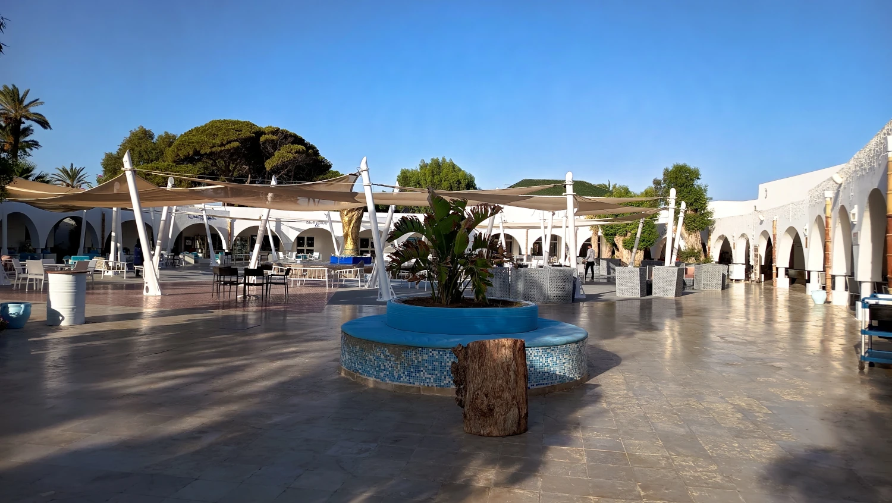
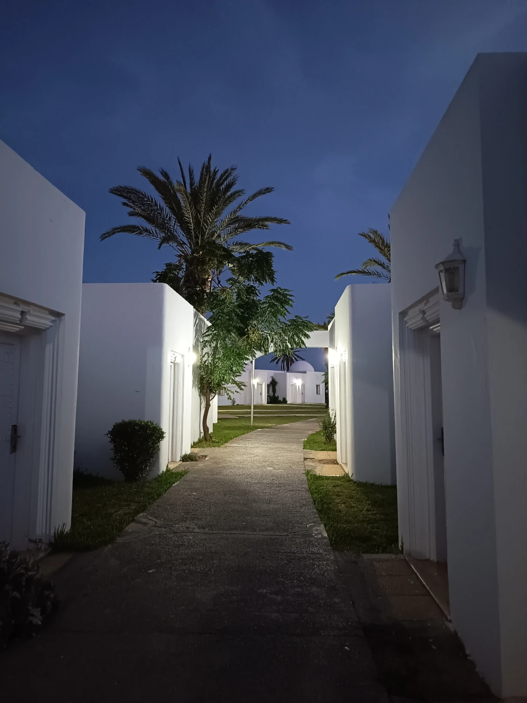
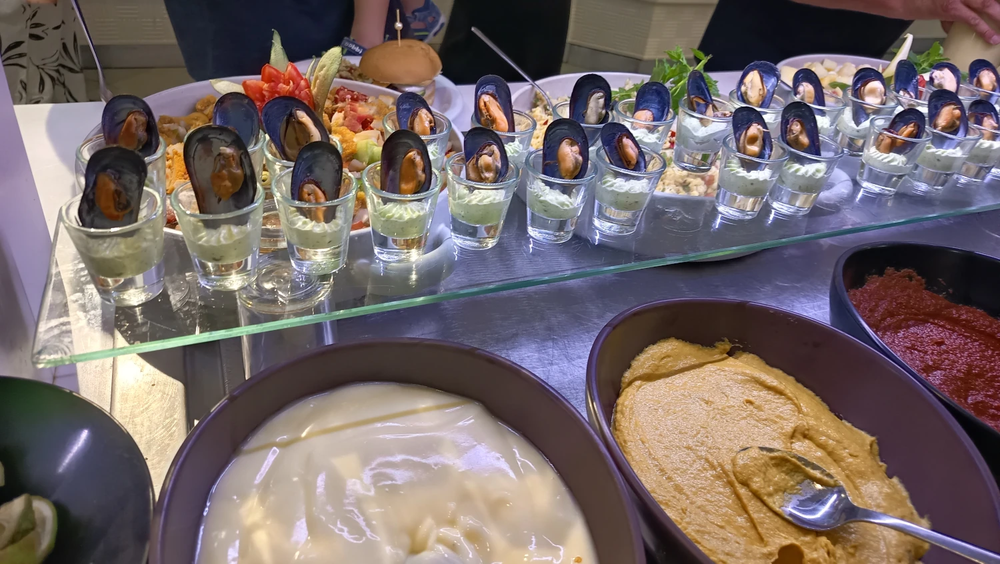
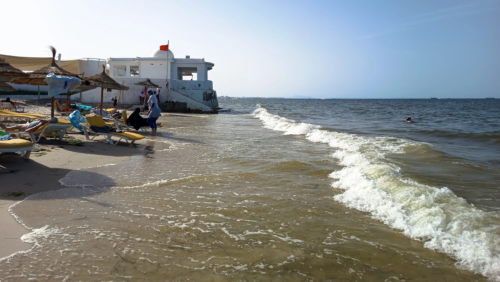
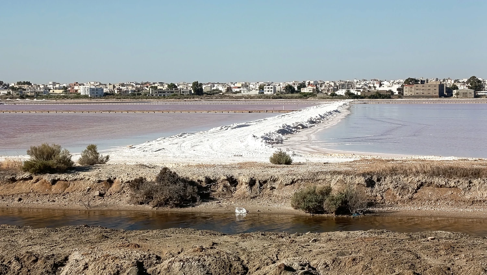
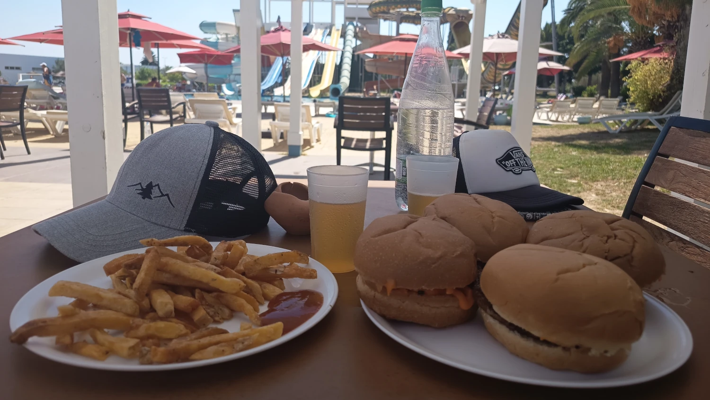
Od antického Kartága až po Saharu
Tunisko leží v severní Africe na pobřeží Středozemního moře. Na západě sousedí s Alžírskem a na jihovýchodě s Libyí. Přestože si ho většina Evropanů spojuje především s plážovými resorty, země má překvapivě rozmanitou krajinu – od zelenějšího severu přes olivové háje a vyprahlé vnitrozemí až po Saharu na jihu.
Hlavním městem je Tunis. Oficiálním jazykem je arabština, ale kvůli francouzské koloniální minulosti je velmi rozšířená také francouzština, zejména ve městech, administrativě a obchodě. V turistických oblastech se běžně domluvíš francouzsky a anglicky, někdy také německy.
Měnou je tuniský dinár (TND). Tunisko patří podle Světové banky mezi země s nižším středním příjmem. V roce 2025 mělo přibližně 12,35 milionu obyvatel.
A právě kontrasty jsou na Tunisku asi nejzajímavější. Moderní hotely a turistické zóny stojí jen několik kilometrů od tradičních čtvrtí, tržišť, malých kaváren a míst, kde život funguje výrazně jinak než u nás.
👥 Populace
Tunisko má přibližně 12,35 milionu obyvatel. Populace stále roste, ale už poměrně pomalu – kolem 0,6 % ročně.
Většina obyvatel žije na severu a podél pobřeží, zatímco saharský jih je velmi řídce osídlený. Největší koncentrace obyvatel je kolem Tunisu a dalších pobřežních měst, například Sfaxu, Sousse a Monastiru.
Tunisané jsou převážně Arabové a arabizovaní Berbeři, přičemž berberské kořeny jsou v tuniské kultuře stále patrné.
🛡️ Bezpečnost
Turistická letoviska jako Monastir, Sousse, Hammamet nebo Djerba jsou silně zaměřená na zahraniční návštěvníky. Přesto je dobré si uvědomit, že bezpečnostní situace není úplně srovnatelná s Českem.
České MZV aktuálně doporučuje zvýšenou obezřetnost především mimo hotelové resorty, vyhýbat se demonstracím, velkým shromážděním a izolovaným oblastem a nechodit v noci na opuštěná místa. Nedoporučuje také fotografovat vojenské, policejní a vládní objekty. V zemi nadále platí výjimečný stav zavedený po teroristických útocích v roce 2015.
V turistických městech jsou běžnějším problémem spíš kapsáři, předražené služby, různé turistické „nabídky“ a snaha z návštěvníka vytáhnout peníze než násilná kriminalita.
🛐 Náboženství
Dominantním náboženstvím je islám, konkrétně převážně sunnitský islám. Náboženství má v každodenním životě větší význam než v dnešním Česku.
V turistických resortech jsou pravidla velmi uvolněná – běžné jsou plavky, alkohol i evropský způsob oblékání. Mimo resorty je ale vhodné respektovat místní kulturu, především při návštěvě mešit a konzervativnějších oblastí.
V průběhu ramadánu se mění rytmus každodenního života a přes den může být mimo turistická centra část restaurací a obchodů zavřená.
🎓 Školství
Tunisko má v rámci severní Afriky poměrně rozvinutý vzdělávací systém. Základní vzdělávání je povinné a stát dlouhodobě investoval do dostupnosti škol.
Ve školách se používá především arabština, ale velmi významné postavení má francouzština. Na vyšších stupních vzdělávání se francouzština často používá například v technických a přírodovědných oborech.
Tunisko má také univerzity a poměrně vysoký počet vzdělaných mladých lidí. Paradoxem země je, že právě mladí absolventi mají často problém najít odpovídající práci.
💼 Ekonomika a zaměstnanost
Tuniská ekonomika stojí na kombinaci služeb, průmyslu, zemědělství a cestovního ruchu. Významná je výroba automobilových a elektrotechnických součástek, textilní průmysl, produkce olivového oleje, datlí a citrusů a samozřejmě turistika.
V roce 2025 činila nezaměstnanost přibližně 15 %, což je oproti Česku velmi vysoké číslo. Ještě výraznějším problémem je nezaměstnanost mladých lidí.
Životní úroveň je výrazně nižší než v ČR a část ekonomiky funguje neformálně – drobní obchodníci, trhovci, taxikáři nebo sezónní pracovníci v turistice.
🪙 Chudoba
Rozdíl mezi turistickým resortem a skutečným Tuniskem může být značný.
Podle posledních dostupných údajů Světové banky žilo v roce 2021 pod tuniskou národní hranicí chudoby přibližně 16,6 % obyvatel. Ve venkovských oblastech to bylo téměř 25 %, zatímco ve městech necelých 13 %.
Největší rozdíly jsou mezi bohatším pobřežím a chudšími oblastmi ve vnitrozemí.
👵 Důchody
Tunisko má systém sociálního zabezpečení a starobních důchodů, takže nejde o zemi, kde by státní důchody vůbec neexistovaly.
Systém je rozdělen především podle toho, zda člověk pracuje ve veřejném nebo soukromém sektoru. Problém představuje velká část lidí pracujících v neformální ekonomice, kteří nemají stejné sociální zabezpečení jako zaměstnanci s oficiální pracovní smlouvou.
Stejně jako řada evropských zemí Tunisko řeší stárnutí populace a dlouhodobé financování důchodového systému.
🏡 Bydlení
Ve městech najdeš moderní byty a vily, ale také velmi jednoduchou zástavbu. Typické tuniské domy bývají uzavřenější směrem do ulice a často se soustředí kolem vnitřního dvora, což pomáhá chránit obyvatele před horkem a zároveň poskytuje soukromí.
Zajímavé jsou ploché střechy, bílé fasády a modré dveře a okenice, které jsou typické především pro pobřežní oblasti.
V turistických oblastech jsou samozřejmě obrovské hotelové komplexy, které mohou vytvářet dost zkreslenou představu o tom, jak běžní Tunisané skutečně žijí.
🏥 Zdravotnictví
Tunisko má veřejné i soukromé zdravotnictví a systém zdravotního pojištění. Více než čtyři pětiny obyvatel jsou zahrnuty do některého systému zdravotního pojištění, i když mezi jednotlivými skupinami existují rozdíly v dostupnosti péče.
Ve větších městech jsou nemocnice, kliniky i lékárny. Soukromá zdravotnická zařízení mívají vyšší standard než veřejná.
Pro turistu je zásadní kvalitní cestovní zdravotní pojištění, protože evropský průkaz EHIC v Tunisku nefunguje jako v zemích EU.
🚘 Doprava
Doprava je proti Česku poněkud… temperamentnější. 😄 Troubení, rychlé změny pruhů a volnější interpretace dopravních pravidel jsou poměrně běžné.
Mezi městy fungují autobusy, vlaky a především louage – sdílené minibusy nebo větší taxi, které vyjíždějí po naplnění cestujícími.
Ve městech jsou velmi praktická taxi. Cenu je dobré sledovat na taxametru nebo si ji domluvit předem.
Pro vás je zajímavé, že oblast Monastir–Sousse patří mezi turisticky dobře propojené části země. Takže výlet z hotelové zóny do Monastiru nebo Sousse nebude problém.
🌱 Ekologie
Jedním z největších problémů Tuniska je nedostatek vody. Země patří mezi oblasti výrazně ohrožené změnou klimatu a potýká se s dlouhodobým suchem, úbytkem vodních zdrojů, erozí pobřeží a rostoucím rizikem extrémních povětrnostních jevů.
Dalším problémem je nakládání s odpady a čištění odpadních vod. Mimo turistická centra může být rozdíl v čistotě veřejného prostoru proti Česku dost viditelný.
Zároveň je Tunisko významným producentem olivového oleje a rozsáhlé olivové háje tvoří typickou součást krajiny.
🎭 Kultura a zvyky
Tuniská kultura kombinuje arabské, berberské, islámské, středomořské a francouzské vlivy.
Rodina hraje velmi důležitou roli a společenský život je mnohem více založený na osobním kontaktu. Kavárny jsou důležitým místem setkávání – zejména mužů.
Na trzích je běžné smlouvání. První cena rozhodně nemusí být cena poslední.
Velmi běžná je silná sladká káva, mátový čaj, dlouhé večerní posezení a pomalejší životní tempo.
Při vstupu do mešity je nutné respektovat pravidla oblékání a zouvat boty tam, kde je to vyžadováno.
🥧 Speciální jídla a pití
Tuniská kuchyně je výrazná, kořeněná a často podstatně pálivější, než by člověk čekal. Základem je olivový olej, rajčata, papriky, vejce, tuňák, ryby, skopové maso a samozřejmě harissa.
Určitě bych ochutnala brik – tenké smažené těsto nejčastěji plněné vejcem a tuňákem; tuniský kuskus, který bývá pikantnější než marocký; lablabi, cizrnovou polévku s chlebem a harissou; slata mechouia, salát z grilovaných paprik a rajčat; ojja, pikantní rajčatový pokrm s vejci; a makroudh, sladké pečivo z krupice plněné datlemi.
Z nápojů je typický silný mátový čaj, káva a čerstvé ovocné šťávy. Alkohol je dostupný především v hotelech, turistických restauracích a některých obchodech, ale není samozřejmou součástí života jako u nás.
🎩 Speciální rozdíly oproti ČR
Smlouvání je normální. Především na trzích a v obchodech se suvenýry.
Pátek je nejdůležitější den muslimského týdne, i když Tunisko funguje poměrně sekulárně.
Volání k modlitbě z mešit uslyšíš několikrát denně, včetně časného rána.
Francouzština je všude, přestože oficiálním jazykem je arabština.
Provoz na silnicích je chaotičtější než u nás.
Ceny pro turistu nemusí být stejné jako pro místního, hlavně pokud cena není pevně uvedená.
Spropitné je mnohem běžnější a v turistických službách se často očekává.
Resort není reprezentativní vzorek Tuniska. Za jeho branami může země vypadat úplně jinak.
Oblečení: v hotelu prakticky evropská pravidla, ve městech a na venkově je vhodnější trochu střídmější oblečení.
Harissa se objevuje skoro všude. A „trochu pálivé“ může mít v Tunisku jiný význam než u nás.
🌟 Co určitě nevynechat
Když budete bydlet u Monastiru, jako první bych dala samotný Monastir.
Dominantou města je Ribat of Monastir – mohutná pobřežní pevnost, jejíž počátky sahají do 8. století. Hned vedle stojí monumentální mauzoleum bývalého prezidenta Mausoleum of Habib Bourguiba. A protože jste u moře, můžete projít také přístav, pobřeží a Monastir Beach.
Z našeho ubytování bych ale rozhodně nezůstala jen u Monastiru. Sousse máme relativně blízko a jeho historická medina je úplně jiný zážitek než hotelová oblast. Dále stojí za zvážení El Jem s obrovským římským amfiteátrem.
Při delším výletu pak přichází na řadu Tunis + Kartágo + Sidi Bou Said. A pokud chcete opravdu poznat druhou tvář Tuniska, pak vícedenní výlet na Saharu, například přes Matmatu, Douz a oblast solného jezera Chott el Jerid.
🧠 Zajímavosti
Tunisko je nejsevernější zemí Afriky a z jeho pobřeží je Evropa geograficky překvapivě blízko.
Na území dnešního Tuniska stálo legendární Kartágo, které bylo jedním z největších soupeřů starověkého Říma. Právě odtud pocházel vojevůdce Hannibal.
Tunisko bylo také jedním z hlavních míst, kde v roce 2010 začalo arabské jaro.
Část filmové ságy Star Wars se natáčela v jižním Tunisku. Dokonce i název planety Tatooine byl inspirován tuniským městem Tataouine.
A Tunisko není jen Sahara. Sever země má středomořské klima, lesy, zemědělskou krajinu a v zimě může být překvapivě chladno.
💡 Typy před návštěvou země
Cestovní pas: Češi mohou v současnosti cestovat do Tuniska za turistikou až na 90 dní bez víza. Pas musí být platný minimálně tři měsíce po plánovaném konci pobytu. Před samotnou cestou bych podmínky ještě jednou zkontrolovala, protože se mohou změnit.
Peníze: Tuniský dinár je regulovaná měna. Na tržiště, taxi a drobné nákupy se hodí hotovost.
⚠️ Pozor při platbě kartou
Pokud platíš kartou, vždy si zkontroluj, jestli platba opravdu prošla. Může se stát, že ti obsluha oznámí, že transakce neproběhla, a požádá tě o zaplacení ještě jednou. Bez internetu si přitom nemusíš být schopný hned ověřit pohyb na účtu a až později zjistíš, že platba proběhla dvakrát. Proto při neúspěšné platbě raději nepospíchej s druhým pokusem a pokud můžeš, zkontroluj bankovní aplikaci nebo si nech ukázat potvrzení o zamítnuté transakci.
Voda: Vodu z kohoutku bych jako turista raději nepila a držela se balené vody.
Slunce: Tuniské slunce nepodceňovat ani při větru od moře. Opalovací krém, pokrývka hlavy a dostatek vody jsou základ.
Taxi: Trvej na zapnutém taxametru, případně si cenu domluv ještě před jízdou.
Trhy: Smlouvej. Není to neslušnost, ale součást místní obchodní kultury.
Fotografování: Nefoť policii, armádu, vojenská zařízení ani vládní budovy. České MZV doporučuje opatrnost také při focení místních lidí.
Oblečení: Resort a pláž jsou jedna věc, medina nebo menší město druhá. Mimo turistické oblasti je rozumné oblékat se trochu střídměji.
Internet: Pokud budete hodně cestovat mimo hotel, místní SIM/eSIM může být praktičtější než roaming.
Výlet na Saharu: Pokud máte možnost, nevynechávala bych ho. Resortové Tunisko a jižní Tunisko jsou prakticky dva rozdílné světy.
Monastir – víc než jen tuniské letovisko
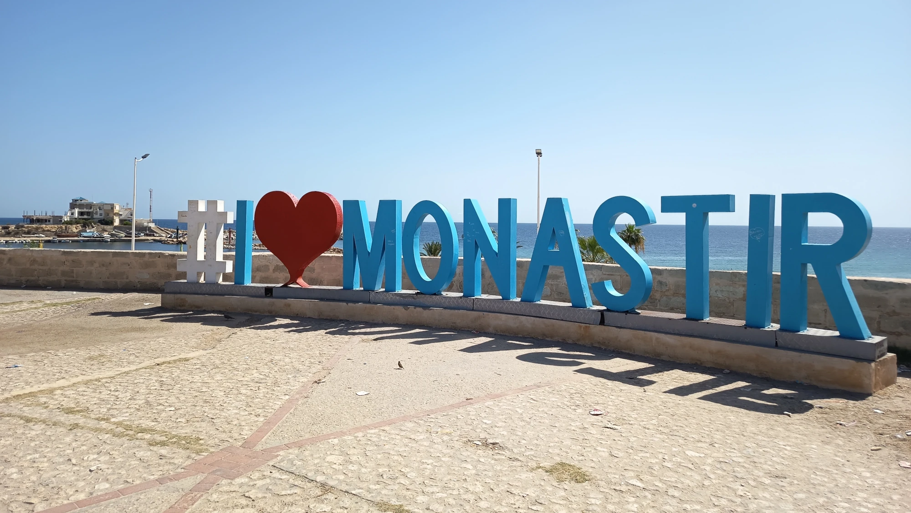
Monastir leží na východním pobřeží Tuniska, přímo u Středozemního moře. Je to historické přístavní město, ale zároveň jedno z významných tuniských letovisek. Je mnohem víc než jen řada hotelů – jeho nejvýraznější dominantou je mohutný Ribat v Monastiru, jedna z nejstarších islámských pevností v severní Africe. Nedaleko se nachází také honosné mauzoleum Habíba Burgiby, prvního prezidenta nezávislého Tuniska, který se právě v Monastiru narodil.
Město má přibližně 100 tisíc obyvatel a je správním centrem stejnojmenného guvernorátu. Kromě cestovního ruchu je důležitým centrem obchodu, služeb a rybolovu. Monastir má také vlastní mezinárodní letiště a dobré vlakové spojení například se Sousse.
Turistická část města se soustředí především kolem pobřeží, přístavu, ribatu a historického centra. Najdete zde tradiční medinu s obchůdky a tržišti, mešity, kavárny i restaurace. Monastir není tak hektický jako některá větší tuniská města, přesto je potřeba počítat s typickým severoafrickým ruchem, smlouváním v obchodech a poměrně dotěrnými prodejci.
Zajímavostí je, že zdejší ribat posloužil také filmařům. Objevil se například ve filmu Život Briana skupiny Monty Python a ve známé minisérii Ježíš Nazaretský. Díky zachovalým hradbám, věžím a výhledu na moře patří k místům, která při návštěvě Monastiru rozhodně stojí za vidění.
Galerie
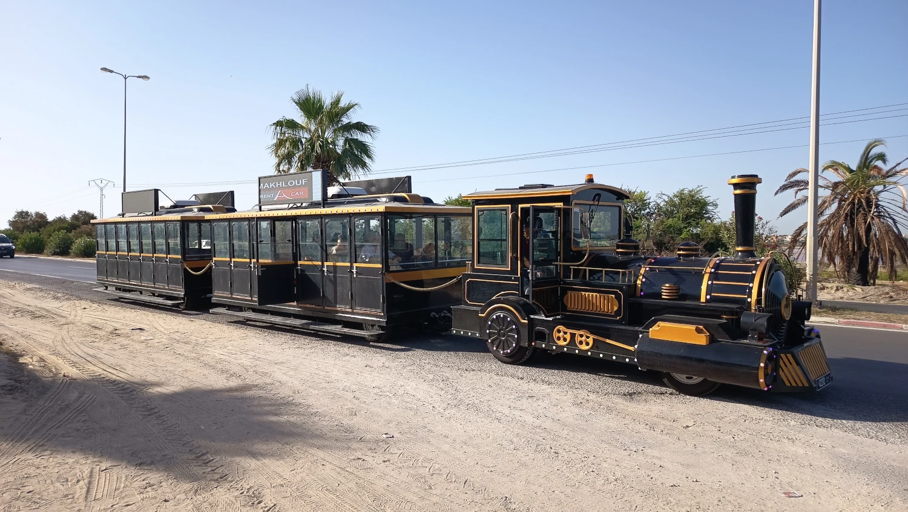
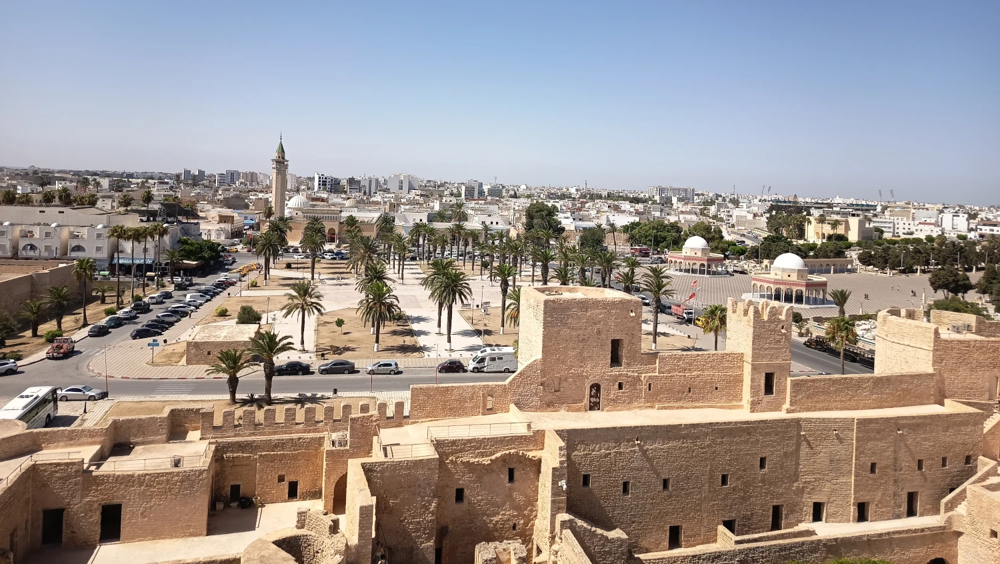
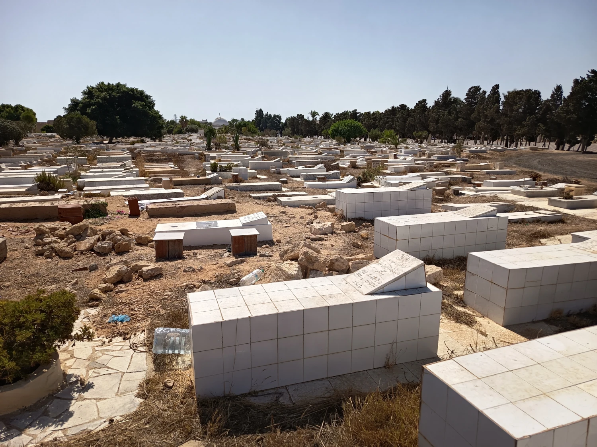
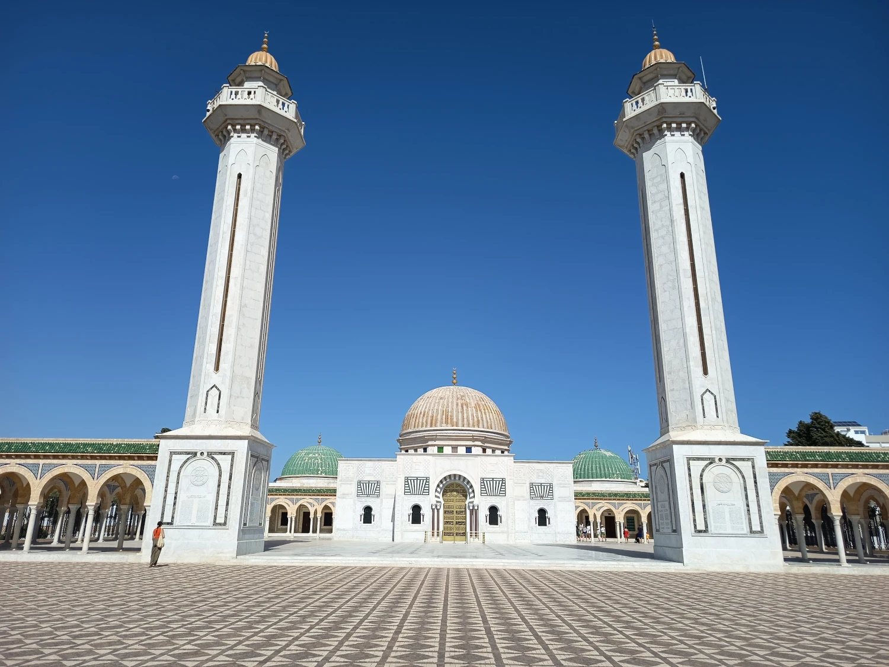
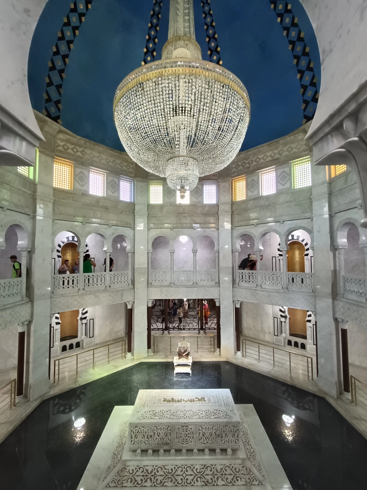
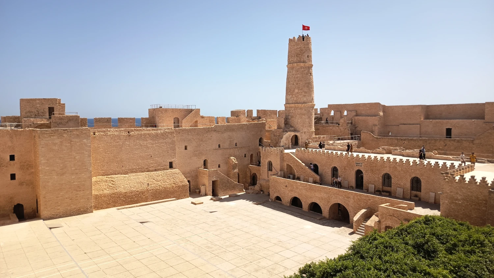